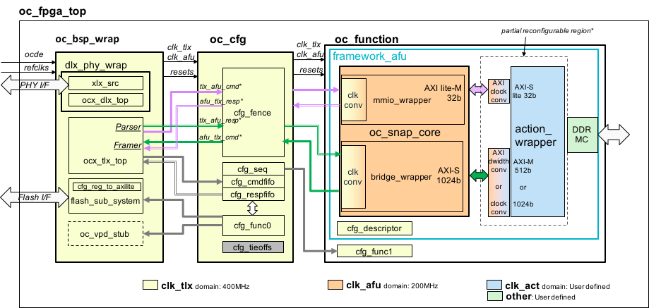

Partial Reconfiguration (PR)
Partial Reconfiguration Mode Introduction
The Partial Reconfiguration (PR) mode allows a user to reconfigure/reprogram the whole FPGA while keeping all the OpenCAPI link logic alive. Therefore the OC link is not stopped anymore.
This is typically used in a cloud specific configuration. A stable fixed base/reference design is programmed in the Flash and a temporary user image programmed in the FPGA at user request.
The reboot of the server or the reload of the FPGA from the Flash will reprogram the base design (and default associated action) into the FPGA.
Note
This Partial Reconfiguration mode, also called "Dynamic Function eXchange(DFX)" by Vivado tools is enabled and tested, as of today, only for AD9H3, AD9H335 and AD9H7 cards
Note
The simulation is not affected by this mode.
Design changes
Starting with OC-ACCEL git tag2.0, the design architecture is modified to decouple the "static" area from the "dynamic" part of the design.
An "oc_action_core" level was created containing all the user design code which will be dynamically reprogrammed. This will be what we call the dynamic code.
The static part (sometime called base part) will contain the logic needed for the OpenCAPI link and everything else except the oc_action_core module.
The dynamic part will contain the oc_action_core module and all design specific resources, like AXI clock converter, AXI dwidth converter but also FPGA (internal or external) resources as HBM IP or other IP like EMAC IPs,....
Figure 1: New Block Diagram including PR
Building the base image
The base image is built using the make cloud_base command. A random 3 hex digits PR_code is added into the internal global basic register (PRC) when building the static part. This hereby ensures each dynamic placement of the code is coherent with its associated static mode (eg: PR06f).
The design is placed and routed in a constrained area so that we can efficiently and physically separate the 2 parts of the design.
As an example with an hls_helloworld action using an AD9H3 card, the images files generated in ~oc-accel/hardware/build/Images will be:
oc_2021_0924_1714_PR06f_25G_hls_helloworld_1024_OC-AD9H3_21.bit=> used for jtag programmingoc_2021_0924_1714_PR06f_25G_hls_helloworld_1024_OC-AD9H3_21_primary.bin=> used withoc-flash-scriptto program the Flash with a reference image (this image will be persistent)oc_2021_0924_1714_PR06f_25G_hls_helloworld_1024_OC-AD9H3_21_secondary.binoc_2021_0924_1714_PR06f_25G_hls_helloworld_1024_OC-AD9H3_21_partial.bin=> used withoc-flash-scriptto program the FPGA with the dynamic design (this image will be kept in the FPGA as long as card is not powered off or reloaded)
A xxx_static_routed.dcp file, required for building the dynamic part, is generated in the BASE_DCP_DIR directory defined in snap_env.sh file will be named:
oc_AD9H3_PR06f_static_routed=> this file will be used to build the dynamic partial image (it is independent from the action used since it contains only the static placed and routed code)
Building the action image
The action image is built using the make cloud_action command. The only requirement is to have the xxx_static_routed.dcp file generated for the card and available in the BASE_DCP_DIR directory defined in snap_env.sh file.
Note
If there are several static routed base/reference xxx_static_routed.dcp files for a card, the system will use the most recent.
User can generate as many action images he wants for a same or different dynamic code The images files generated in ~oc-accel/hardware/build/Images will be for example with a hls_hbm_memcopy action for a AD9H3 card:
oc_2021_0924_1504_PR06f_25G_hls_hbm_memcopy_1024_HBM_OC-AD9H3_21_partial.bin=> used for oc-flash-script programming of the dynamic design
Programming the static-base image in flash
As for any design, check User Guide Deploy step.
The base primary/secondary images files will be used with the oc-flash-script software to program the Flash (persistent images)
Programming the dynamic-action image directly in the FPGA
To reprogram dynamically the FPGA with the action image, use the oc-flash-script with the partial.bin image as unique argument. The dynamic part of the FPGA code will be reprogrammed while the static part will be kept alive and unchanged.
To reload the reference/base image, just do a oc-reload and the code from the Flash will be immediately reloaded in the FPGA
Note
Remember that the reference/base image is programmed in the Flash and loaded in the FPGA by a reload or a card reboot, while a dynamic image is programmed in the FPGA meaning that a load or a card reboot will reload the reference image.
PR code
You'll notice that the 3 hex digits randomly generated PR code from the base image is used in all file names to quicker refer to the right static part.
A hardware control is performed by the oc-flash-script programmer to prevent from programming a dynamic image not coherent with its corresponding static/base/reference image.
Cleaning Processes
Cleaning all
A make clean_cloud will perform a make clean and will also clean the BASE_DCP_DIR directory defined in snap_env.sh file.
Clean while keeping static dcp
When we want to build action after a base, we need to keep the dcp as a start base for future actions.
Then we will use a make clean to clean all directories except the BASE_DCP_DIR directory containing the required xxx_static_routed.dcp